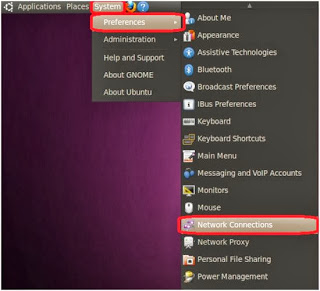
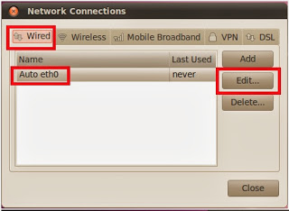

Yerel Ağ (Network) Kurmak - Ubuntu
Ubuntu temelli bir yerel ag (network) nasil kurulur? Ubuntu uzerinden bunu yapmak aslinda cok basit (dis Internet baglantisinin paylastirma konularina daha girmiyoruz), dinamik IP adres kullanmadan, tum makinalara bir statik (ve yerel) IP adresi atayarak bu ag kurulabilir. Belki evde bir Hadoop kumesi kurmak istiyorsunuz, vs.
Once tum makinalarda sshd kurulursa iyi olur:
apt-get install openssh-server
Ag kurmak icin su resimdeki hareketler



Adres olarak 192.168.0.1 sayisi kullanildi, bu adres dis baglantilar icin anlamsiz bir sayidir, sadece yerel ic ag icinde gecerlidir. Bu tur disaridan bagimsiz IP adresleri vardir. Eger ikinci, ucuncu makinayi eklerseniz, 0.2, 0.3, vs. gibi bu makinalar adreslenebilir.
Fiziki baglanti icin en azindan switch denen bir donanim gerekli. Bu donanim uzerinde Ethernet kablo baglantilari olur, eger laptop baglanacaksa, ve son zamanlarda artik laptop'lar uzerinde Ethernet girisi olmadigi icin, bir USB / Ethernet donusturucusu lazim.
Neyse, switch baglantisi ve IP atamasi yapildigi anda o bilgisayarin komut satirindan
sudo ifconfig
isletince yeni IP'nin gorulmesi lazim. Diger makinalar baglaninca, onlardan bu makinaya
ssh 192.168.0.1 -l [kullanici]
diye erisebilirsiniz. Eger tum makinalara sifresiz (ama guvenli) baglanmak icin daha once pek cok kez bahsettigimiz ssh-keygen -t rsa, ile anahtar uretmek, sonra idrsa.pub'in alinip oteki makinaya kopyalanip .ssh/authorizedkeys'e eklenmesi, ardindan ustteki ssh (ve scp) komutu sifresiz olarak giris yapma numarasi kullanilabilir.
Yukarı